11 września tego roku o godzinie 14:00 czasu lokalnego, podczas II spotkania krótkofalowców "Bory Dolnośląskie", Stowarzyszenie WroSpace, wraz z klubem krótkofalowców SP6ZWR, wysłało balony stratosferyczne. Balony nadawały sygnały APRS, 4FSK pracujące w paśmie 70cm oraz czujniki jakości powietrza. Na pokładzie balonu z okazji 100 rocznicy urodzin Stanisława Lema znajdowały się nadajniki SSTV - po jednym w paśmie 70cm oraz 2m. W przerwie od nadawania mogliśmy usłyszeć głos samego Stanisława Lema.
Zdjęcia odbierałem programami RXSSTV oraz MMSSTV za pomocą prostego dipola półfalowego na pasmo 2m, sygnały leciały z wysokości około 25-30km ponad 100km od QTH. Poniżej znajduję się kilka z nich odebranych z pasma 2m programem RXSSTV (wychodziły lepiej niż MMSSTV).
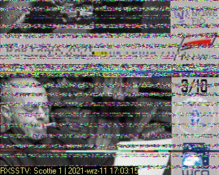 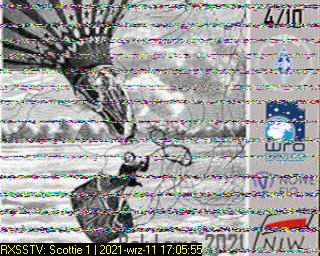 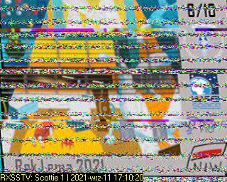 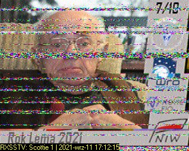 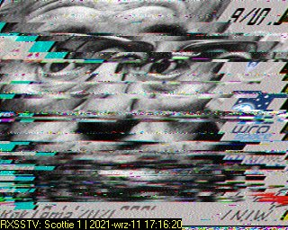 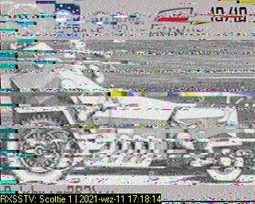 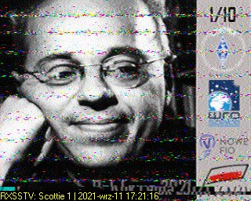 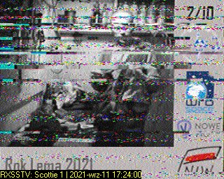 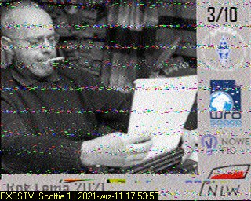 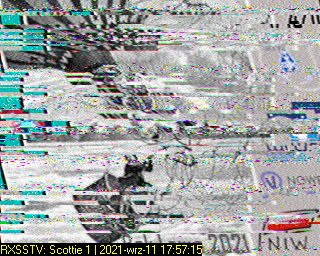 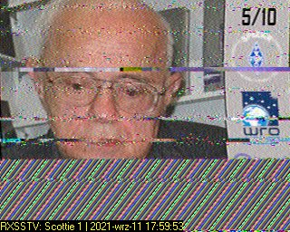